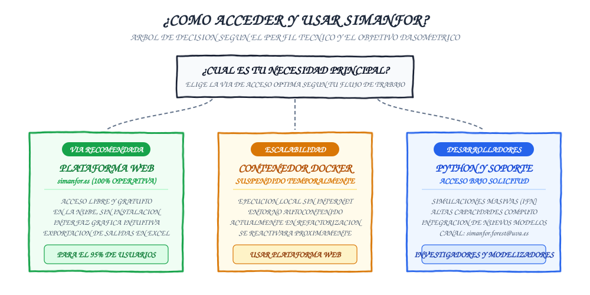

Vías de uso de la plataforma
SIMANFOR está diseñado para dar respuesta a perfiles técnicos diversos, desde estudiantes y gestores de monte que buscan evaluar una prescripción selvícola puntual, hasta investigadores que procesan miles de parcelas de inventario en entornos de computación de alto rendimiento.
Para adaptarse a estas necesidades, existen tres vías de interacción con la herramienta. Esta guía describe cada alternativa, clarifica el estado operativo actual de cada servicio y proporciona una matriz de decisión para elegir la opción adecuada.
Contenido
- Árbol de decisión de vías de acceso
- Plataforma web: la vía principal y recomendada
- Contenedor Docker
- Simulador en Python y desarrollo de nuevos modelos
- Matriz de decisión por perfil de usuario
- Siguientes pasos recomendados
Árbol de decisión de vías de acceso
El siguiente esquema resume la vía de interacción recomendada en función de los requisitos operativos y el volumen de datos a procesar:

Plataforma web: la vía principal y recomendada
La plataforma web accesible en simanfor.es es el canal oficial, prioritario y recomendado para la gran mayoría de los usuarios (gestores de montes, consultores ambientales, docentes y estudiantes).
Características principales
- Servicio en la nube sin instalación: Opera directamente desde cualquier navegador web moderno (Firefox, Chrome, Edge, Safari). No requiere instalar software local, configurar intérpretes de programación ni gestionar dependencias de sistema operativo.
- Acceso libre y gratuito: El servicio está disponible de forma abierta y sin coste de licencia. Solo requiere crear una cuenta de usuario para almacenar de forma privada inventarios, escenarios y resultados.
- Interfaz visual guiada: Permite cargar archivos de inventario en Excel mediante plantillas normalizadas, seleccionar modelos del catálogo oficial, definir intervenciones de clara paso a paso e inspeccionar los informes de diagnóstico.
- Exportación directa: Los resultados dasométricos de cada simulación se generan en libros de Excel descargables estructurados por hojas de rodal, inventario residual y evaluación comercial.
Vía recomendada para comenzar
Si estás dando tus primeros pasos con SIMANFOR, necesitas resolver una práctica académica o estás redactando un proyecto de ordenación forestal para un rodal o finca, la plataforma web cubre el 100% de tus necesidades de cálculo sin fricción técnica. Consulta la Guía de la plataforma web para aprender a utilizarla paso a paso.
Contenedor Docker
Históricamente, SIMANFOR ofreció imágenes públicas en contenedores Docker para permitir la ejecución local de la herramienta en equipos sin conexión a internet.
Estado operativo actual
Las imágenes públicas de Docker para usuarios externos se encuentran temporalmente suspendidas por revisión técnica y mantenimiento de infraestructura.
- Motivo técnico: El núcleo del simulador y la estructura de modelos han experimentado una profunda refactorización orientada a la arquitectura SSOT (Single Source of Truth) y a la optimización del rendimiento numérico. Las imágenes anteriores están siendo rediseñadas para garantizar una sincronización exacta con las últimas versiones de los modelos dasométricos.
- Recomendación actual: Mientras concluye este proceso de actualización, todos los usuarios que requieran ejecutar simulaciones deben utilizar la plataforma web en la nube (simanfor.es), que cuenta con las versiones más recientes y verificadas de todo el catálogo de modelos.
- Reactivación futura: Una vez finalizada la homologación de las nuevas imágenes ligeras, se publicará una guía detallada para su despliegue local en esta misma sección.
Servicio Docker en proceso de actualización
La sección de Docker de la documentación para usuarios permanece en mantenimiento preventivo. La plataforma web en simanfor.es opera con total normalidad y constituye la alternativa directa plenamente operativa.
Simulador en Python y desarrollo de nuevos modelos
Para grupos de investigación, modelizadores forestales y analistas de datos avanzados que requieren capacidades más allá de la interfaz web, el núcleo computacional de SIMANFOR está implementado como una herramienta modular en Python.
Casos de uso especializados
- Simulaciones masivas por lotes: Procesamiento sistemático de miles de parcelas del Inventario Forestal Nacional (IFN) o grandes bases de datos dasométricas regionales.
- Computación de alto rendimiento (HPC): Despliegue de simulaciones distribuidas en servidores de altas prestaciones.
- Integración en pipelines analíticos: Conexión programática del simulador con scripts de R o Python para análisis estadístico, optimización multiobjetivo o visualización avanzada.
- Calibración e incorporación de nuevos modelos: Implementación de nuevas funciones de crecimiento, relaciones alométricas o coeficientes para especies no cubiertas en el catálogo actual.
Protocolo de acceso y colaboración científica
Al tratarse de entornos que exigen coordinación con el equipo de desarrollo de SIMANFOR, el acceso a los scripts avanzados del simulador y la incorporación de modelos se articulan a través de colaboración científica o técnica.
Si tu institución, proyecto de investigación o caso de estudio requiere este tipo de despliegue, contacta directamente con el equipo en simanfor.forest@uva.es describiendo:
1. El alcance del proyecto o investigación.
2. El volumen estimado de inventarios y escenarios a procesar.
3. Las ecuaciones o modelos que deseas calibrar o ensayar en el simulador.
Matriz de decisión por perfil de usuario
La siguiente tabla resume la vía de interacción idónea según tu rol y objetivos:
| Perfil de usuario | Necesidad u objetivo principal | Requisitos técnicos | Vía recomendada |
|---|---|---|---|
| Estudiante universitario | Prácticas de Selvicultura, Ordenación de Montes o Dasometría. | Navegador web y cuenta gratuita. | Plataforma web (simanfor.es) |
| Docente forestal | Talleres prácticos y dirección de trabajos de fin de grado/máster (TFG/TFM). | Navegador web y conexión a internet. | Plataforma web (simanfor.es) |
| Gestor o técnico de campo | Comparación de prescripciones selvícolas para planes de gestión y ordenaciones. | Inventarios de rodal o parcela en Excel. | Plataforma web (simanfor.es) |
| Consultor ambiental | Cuantificación de carbono, biomasa y productos maderables para clientes. | Plantillas estándar de inventario. | Plataforma web (simanfor.es) |
| Investigador / Científico | Análisis a escala comarcal/nacional con parcelas del IFN o clústeres HPC. | Experiencia en Python/R y entorno Linux/Slurm. | Python bajo solicitud (simanfor.forest@uva.es) |
| Modelizador forestal | Integración de nuevas ecuaciones biométricas en el catálogo de SIMANFOR. | Calibración empírica y soporte del equipo. | Colaboración científica (simanfor.forest@uva.es) |
Siguientes pasos recomendados
Una vez identificada la vía adecuada para tu trabajo, puedes continuar explorando la plataforma a través de los siguientes recursos:
- ¿Qué es SIMANFOR?: Revisa los fundamentos y casos de éxito de la herramienta.
- Conceptos clave y flujo de simulación: Comprende la tríada dasométrica (Inventario, Modelo y Escenario).
- Catálogo de modelos forestales: Consulta las especies, regiones y ecuaciones disponibles en el simulador.
- Guía de inventarios: Aprende a preparar tus datos de campo en los formatos compatibles con SIMANFOR.